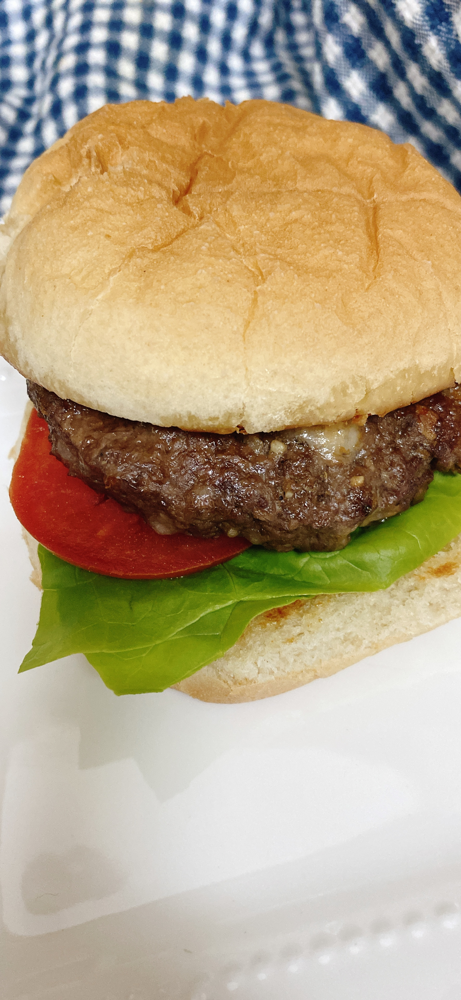

Air Fryer Hamburger Patties for Two

This is a small-scale hamburger recipe, perfect for two people. Serve on toasted hamburger rolls with lettuce, tomato, ranch dressing, and other preferred toppings.
Ingredients:
- ½ pound ground beef
- 1 ounce grated white Cheddar cheese
- 1 tablespoon French-fried onions
- 1 teaspoon dry ranch dressing mix
- ½ teaspoon sazon seasoning (such as Goya®)
- salt and ground black pepper to taste
Directions:
- Preheat an air fryer to 370 degrees F (188 degrees C)
- Mix ground beef, Cheddar cheese, French-fried onions, ranch mix, sazon seasoning, salt, and pepper together in a medium bowl. Shape into two equal hamburger patties
- Air fry until internal thermometer is at least 160 degrees F (70 degrees C), about 6 minutes
Click here to back to index.